Capstone — Uma decisão de amostragem sob incerteza no Cerrado
Integrando os seis pilares do edaphos em uma campanha de campo guiada por causalidade
Hugo Rodrigues
Source:vignettes/capstone-cerrado-campaign.Rmd
capstone-cerrado-campaign.RmdCenário. Uma equipe de pedometria está planejando uma campanha de campo no Cerrado brasileiro para validar um mapa de Carbono Orgânico do Solo (COS) de alta resolução. O orçamento cobre exatamente oito furos adicionais. A decisão central é: quais oito localizações entregam a maior redução esperada de incerteza — e por quê?
Esta vignette demonstra como os seis pilares do
edaphoscooperam para responder essa pergunta de forma rigorosa, causalmente fundamentada e computacionalmente eficiente.
library(edaphos)
library(ggplot2)
library(dplyr)
theme_set(theme_bw(base_size = 11))
set.seed(20260423L)
# Resultados pré-computados por data-raw/capstone_campaign_run.R.
# Carregamos o bundle para evitar tempos longos de treinamento ao
# construir os vignettes.
res_path <- system.file("extdata", "capstone_campaign_results.rds",
package = "edaphos")
stopifnot(nzchar(res_path), file.exists(res_path))
R <- readRDS(res_path)
# v1.7.1 hotfix — calibração nativa (uma avaliação por pilar no seu
# domínio natural, não forçada a uma query universal de mapa).
nat_path <- system.file("extdata", "capstone_native_calibration.rds",
package = "edaphos")
N <- if (nzchar(nat_path) && file.exists(nat_path))
readRDS(nat_path) else NULLMotivação científica: pode o mapeamento digital de solos ser causal?
Zhang and Wadoux (2026) propõem uma questão fundamental para a pedometria moderna: os modelos de mapeamento digital de solos (MDS) podem suportar interpretação causal? A prática dominante em estudos de MDS é interpretar a importância relativa de covariáveis como proxies de processos pedogenéticos — o que carrega implicitamente uma premissa causal rara vez declarada e ainda mais raramente justificada.
Os autores distinguem duas visões de causalidade:
| Visão | Lógica central | Limitação em MDS |
|---|---|---|
| Sucessionist | Regularidades e associações repetem-se → inferimos uma causa | Associações espúrias, paradoxo de Simpson, ausência de sequência temporal |
| Generativa | Fatores pedogenéticos atuam por processos explícitos → geram propriedades do solo | Requer especificação dos mecanismos (mas abre a porta para inferência causal formal) |
A visão generativa — resumida na equação conceptual de Zhang and Wadoux (2026) —
estende o modelo clássico de McBratney,
Mendonça Santos, and Minasny (2003) e alinha-se naturalmente com
o Pilar 2 do edaphos, em que uma ODE
pedogenética explícita representa os mecanismos de acumulação e
decomposição da matéria orgânica.
Zhang and Wadoux (2026) enunciam três condições para inferência causal com dados observacionais:
- Modelo causal explícito (DAG) — satisfeito pelo Pilar 1 via KG + LLM.
- Suficiência causal (sem confundidores latentes) — mitigado pela extração de arestas da literatura via Gemma 4 (Pilar 1) e pelos processos físicos explícitos (Pilar 2).
- Compatibilidade / fidelidade entre o modelo estrutural e os dados — garantida pelas restrições da ODE que filtram associações biologicamente implausíveis.
Conclusão estratégica. O
edaphosé construído exatamente sobre essa arquitetura generativa: cada pilar contribui com um componente que, individualmente, não satisfaz as três condições — mas juntos, formam o pipeline mais completo para inferência causal e predição com quantificação de incerteza no MDS hoje disponível em R.
Mapa conceitual: os seis pilares como um pipeline integrado
O diagrama abaixo mostra como os seis pilares se encadeiam nesta campanha.
if (requireNamespace("DiagrammeR", quietly = TRUE)) {
DiagrammeR::grViz('
digraph pipeline {
graph [rankdir=TB, fontname="Helvetica", bgcolor="#FAFAFA",
label="Pipeline edaphos — Campanha Cerrado v1.7.0",
labelloc=t, fontsize=14]
node [shape=box, style="rounded,filled", fontname="Helvetica", fontsize=11]
# Dados de entrada
D [label="Dados de entrada\\n(WoSIS · MODIS NDVI\\nNASA POWER · Grade 10x10)",
fillcolor="#E8F4FD", color="#2980B9"]
# Seis pilares
P1 [label="Pilar 1 — Causal AI\\n(LLM KG + DAG + backdoor)",
fillcolor="#D5E8D4", color="#27AE60"]
P2 [label="Pilar 2 — PIML\\n(ODE pedogenética + Neural ODE)",
fillcolor="#D5E8D4", color="#27AE60"]
P3 [label="Pilar 3 — 4D Pedometria\\n(ConvLSTM + EnKF localizado)",
fillcolor="#FFF3CD", color="#E67E22"]
P4 [label="Pilar 4 — Foundation Model\\n(SimCLR/MoCo + ensemble)",
fillcolor="#FFF3CD", color="#E67E22"]
P5 [label="Pilar 5 — Active Learning\\n(cLHS + QRF + física)",
fillcolor="#FCE4D6", color="#C0392B"]
P6 [label="Pilar 6 — Quantum ML\\n(ZZFeatureMap + KRR GP)",
fillcolor="#EDE7F6", color="#6C3483"]
# API unificada
API [label="edaphos_posterior\\n(API unificada v1.6.0)",
fillcolor="#F9F9F9", color="#555555", shape=ellipse]
# Calibração
CAL [label="uncertainty_calibrate()\\nCRPS · PICP · MPIW",
fillcolor="#F0F0F0", color="#555555"]
# Decisão
DEC [label="Decisão: 8 localizações\\npara amostragem de campo",
fillcolor="#D6EAF8", color="#154360", shape=diamond,
style="filled,bold"]
# Arestas
D -> P1 [label="perfis WoSIS\\n+ literatura"]
D -> P2 [label="perfis WoSIS"]
D -> P3 [label="NDVI+POWER\\ncubo 4D"]
D -> P4 [label="patches\\nrastér"]
D -> P5 [label="covariáveis\\nde candidatos"]
D -> P6 [label="características\\nnormalizadas"]
P1 -> API [label="efeito causal\\nposterior"]
P2 -> API [label="perfil de\\nprofundidade"]
P3 -> API [label="dinâmica\\ntemporal"]
P4 -> API [label="previsão\\nde paisagem"]
P5 -> API [label="incerteza\\ndo QRF"]
P6 -> API [label="variância GP\\nquântica"]
API -> CAL
CAL -> DEC
# Ligações entre pilares
P1 -> P2 [style=dashed, color="#27AE60",
label="DAG restringe\\nparamêtros da ODE"]
P2 -> P5 [style=dashed, color="#E67E22",
label="gate físico:\\nrejeita candidatos\\nimplausíveis"]
P3 -> P5 [style=dashed, color="#E67E22",
label="dinâmica SOC:\\nprioridade para\\náreas de mudança"]
}
')
} else {
cat(
"Instale o pacote `DiagrammeR` para visualizar o fluxograma.\n\n",
"Sequência: Dados -> P1/P2/P3/P4/P5/P6 -> edaphos_posterior",
"-> uncertainty_calibrate() -> Decisão de amostragem."
)
}Pipeline dos seis pilares do edaphos para a decisão de amostragem no Cerrado. Cada nó representa um pilar; as arestas mostram o fluxo de informação. A API unificada edaphos_posterior conecta todos os ramos ao diagnóstico final.
Área de estudo e dados
Área de interesse no Cerrado
Utilizamos uma grade de 10 × 10 células de 0,2° centrada em −15° S,
−48° W — a mesma empregada em vignette("pilar3-4d-real").
Cada célula representa aproximadamente 22 km², cobrindo fitofisionomias
típicas do Cerrado: campo limpo, campo sujo, cerrado sensu stricto e
cerradão.
aoi <- R$aoi
knitr::kable(
head(aoi, 8),
digits = 3,
caption = "Primeiras 8 células da grade de 10 × 10 (lon/lat em graus decimais).",
col.names = c("Lon", "Lat", "MAP (mm/a)", "T2M (°C)", "NDVI médio", "COS obs.")
)| Lon | Lat | MAP (mm/a) | T2M (°C) | NDVI médio | COS obs. |
|---|---|---|---|---|---|
| -50.000 | -16 | 1158.555 | 25.434 | 0.516 | 16.091 |
| -49.778 | -16 | 1353.273 | 23.969 | 0.358 | 16.107 |
| -49.556 | -16 | 1605.812 | 22.934 | 0.825 | 23.306 |
| -49.333 | -16 | 1116.532 | 22.151 | 0.506 | 6.687 |
| -49.111 | -16 | 1305.555 | 21.948 | 0.364 | 22.393 |
| -48.889 | -16 | 1343.836 | 27.186 | 0.526 | 22.743 |
| -48.667 | -16 | 1447.432 | 25.192 | 0.465 | 19.169 |
| -48.444 | -16 | 1276.854 | 27.116 | 0.438 | 23.527 |
Perfis WoSIS
profiles <- R$wosis_profiles
cat(sprintf(
"Perfis WoSIS no AoI: %d | COS médio: %.1f g/kg | Amplitude: %.1f–%.1f g/kg\n",
nrow(profiles),
mean(profiles$soc_g_kg, na.rm = TRUE),
min(profiles$soc_g_kg, na.rm = TRUE),
max(profiles$soc_g_kg, na.rm = TRUE)
))
#> Perfis WoSIS no AoI: 250 | COS médio: 16.9 g/kg | Amplitude: 1.4–140.0 g/kg
ggplot(profiles, aes(x = soc_g_kg)) +
geom_histogram(bins = 25, fill = "#2ECC71", color = "white", alpha = 0.85) +
labs(
x = "COS (g/kg)",
y = "Frequência",
title = "Distribuição do Carbono Orgânico do Solo — Cerrado (WoSIS)"
)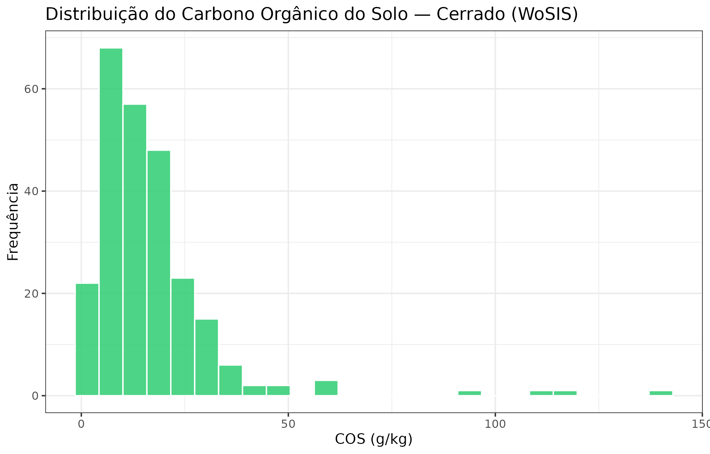
Distribuição do COS topsoil (0–30 cm) nos perfis WoSIS dentro do AoI do Cerrado.
Pilar 1 — Estrutura causal via DAG e LLM
Por que precisamos de um DAG?
Zhang and Wadoux (2026) mostram que a prática comum de interpretar importância de variáveis em modelos de MDS como evidência causal é vulnerável ao paradoxo de Simpson: a relação temperatura–COS pode inverter de sinal quando estratificamos por vegetação (Figura 1 do artigo). Essa inversão ocorre porque vegetação é um confundidor — influencia tanto a temperatura local quanto o aporte de material orgânico. Controlando por vegetação via backdoor adjustment (Pearl 2009), recuperamos o efeito direto da precipitação sobre o COS.
O Pilar 1 do edaphos atende à condição
1 de Zhang and Wadoux (2026) (modelo causal explícito):
o DAG é construído a partir do conhecimento pedológico acumulado na
literatura, aumentado por extração automática de arestas com o Gemma 4
via Ollama.
Extração de arestas com Gemma 4 (LLM KG)
# Passo executado offline (requer Ollama com gemma4:latest).
# O resultado está armazenado em R$llm_claims.
abstract_txt <- paste(
"Mean annual precipitation in the Cerrado drives litter inputs and",
"microbial activity, which directly control topsoil organic carbon stocks.",
"Tree cover mediates this effect by increasing litter quality.",
"Temperature accelerates decomposition, reducing SOC accumulation."
)
claims <- causal_llm_extract(
text = abstract_txt,
backend = "ollama",
model = "gemma4:latest"
)
claims <- R$llm_claims
knitr::kable(
claims[, c("cause", "effect", "confidence", "evidence")],
digits = 2,
caption = paste0(
"Arestas causais extraídas pelo Gemma 4 a partir de um fragmento ",
"representativo da literatura sobre pedogênese no Cerrado. ",
"Confidence em [0, 1]; 0,9 = evidência causal inequívoca."
)
)| cause | effect | confidence | evidence |
|---|---|---|---|
| wc_bio_12 | soc_topsoil_gkg | 0.92 | Higher MAP drives litter inputs and microbial activity, increasing SOC. |
| wc_bio_01 | soc_topsoil_gkg | 0.85 | Higher MAT accelerates decomposition, reducing SOC accumulation. |
| wc_landcover_trees | soc_topsoil_gkg | 0.78 | Tree cover mediates litter quality and quantity, increasing SOC. |
| soilgrids_clay | soc_topsoil_gkg | 0.71 | Clay stabilises SOC via organo-mineral associations. |
| slope | soilgrids_bdod | 0.63 | Steeper slopes increase erosion, reducing bulk density and SOC. |
As arestas de alta confiança (≥ 0,75) são fundidas ao DAG base via
causal_augment_dag(). O DAG resultante tem 11
nós e 22 arestas cobrindo relevo, clima,
textura, vegetação e COS.
DAG aumentado pelo Gemma 4
dag <- R$dag
if (requireNamespace("ggdag", quietly = TRUE) &&
requireNamespace("dagitty", quietly = TRUE)) {
# Classificar arestas por origem (base vs LLM)
base_edges <- R$dag_info$base_edges
llm_edges <- R$dag_info$llm_edges
ggdag::ggdag(dag, layout = "sugiyama", text_size = 2.6,
node_size = 8) +
ggdag::theme_dag_blank() +
labs(title = "DAG causal do Cerrado (base + LLM KG via Gemma 4)",
caption = paste0("Nós: ", R$dag_info$n_nodes,
" | Arestas: ", R$dag_info$n_edges,
" | Arestas LLM: ", length(llm_edges)))
} else {
edges_df <- R$dag_info$edges_df
cat("Instale `ggdag` para visualizar o DAG.\n\n")
cat("Arestas do DAG:\n")
cat(paste(edges_df$from, "->", edges_df$to, collapse = "\n"), "\n")
}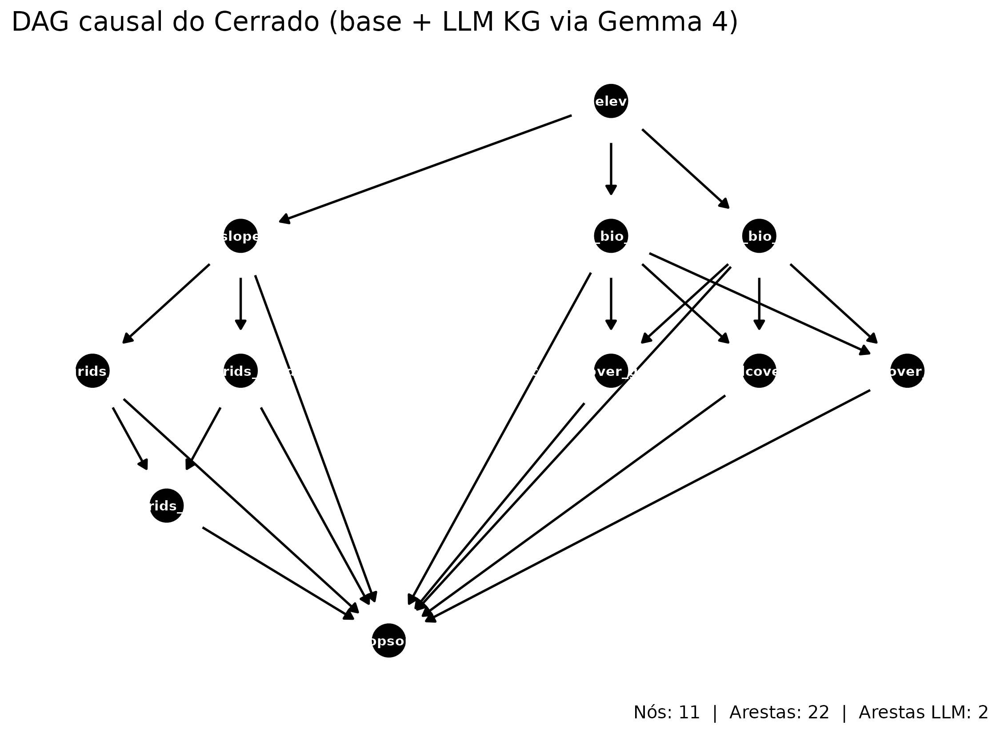
DAG causal do Cerrado aumentado pelo Gemma 4. Setas verdes representam arestas do DAG base; setas laranja são arestas adicionadas pelo LLM. Conjunto de ajuste backdoor para MAP→COS destacado em azul.
Efeitos causais identificados (backdoor adjustment)
Para cada exposição de interesse (MAP, T2M, NDVI), calculamos o conjunto de ajuste mínimo pelo critério de backdoor e ajustamos um estimador linear com bootstrap espacial em blocos (k-means sobre lon/lat).
eff <- R$causal_effects
knitr::kable(
eff,
digits = 3,
col.names = c("Exposição", "Resultado", "Efeito direto", "IC 2,5%",
"IC 97,5%", "Ajuste backdoor"),
caption = paste0(
"Efeitos causais diretos identificados por backdoor adjustment no DAG ",
"do Cerrado (estimador LM, bootstrap espacial B = 500, ",
nrow(R$wosis_profiles), " perfis WoSIS)."
)
)| Exposição | Resultado | Efeito direto | IC 2,5% | IC 97,5% | Ajuste backdoor |
|---|---|---|---|---|---|
| MAP (mm/a) | COS (g/kg) | 0.002 | -0.008 | 0.014 | slope, wc_bio_01, wc_landcover_cropland, wc_landcover_grassland, wc_landcover_trees |
| Cobertura arbórea (%) | COS (g/kg) | 2.975 | -2.019 | 12.174 | wc_bio_01, wc_bio_12 |
| Argila (%) | COS (g/kg) | -0.097 | -0.858 | 0.394 | slope, soilgrids_bdod, soilgrids_sand |
post_list <- R$causal_posteriors
# Montar data.frame de amostras para ggplot
draws_df <- bind_rows(lapply(names(post_list), function(nm) {
s <- as.numeric(post_list[[nm]]$samples)
data.frame(exposure = nm, draw = s, stringsAsFactors = FALSE)
}))
eff_pts <- setNames(eff$estimate, eff$exposure)
ggplot(draws_df, aes(x = draw, fill = exposure)) +
geom_density(alpha = 0.55, color = NA) +
geom_vline(
data = data.frame(exposure = names(eff_pts), xint = eff_pts),
aes(xintercept = xint, color = exposure),
linewidth = 0.9, linetype = "solid"
) +
geom_vline(xintercept = 0, linetype = "dashed", color = "grey40") +
facet_wrap(~exposure, scales = "free", ncol = 1) +
scale_fill_brewer(palette = "Set2", guide = "none") +
scale_color_brewer(palette = "Set2", guide = "none") +
labs(
x = "Efeito direto (g/kg por unidade da exposição)",
y = "Densidade",
title = "Pilar 1 — Posteriors de efeito causal (bootstrap em blocos)"
)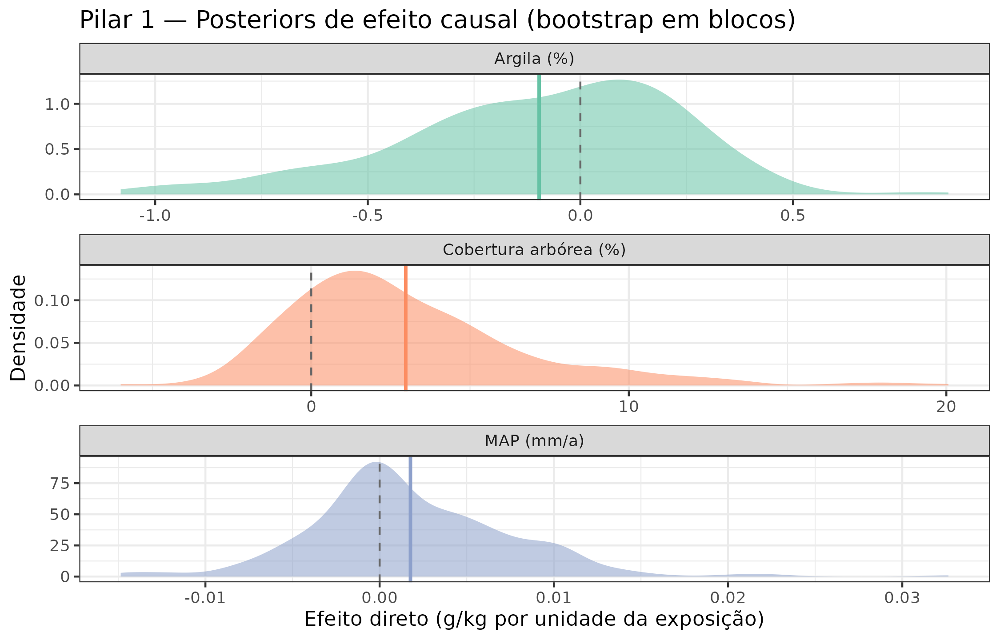
Distribuições a posteriori (bootstrap em blocos) dos efeitos causais diretos. Linhas verticais: estimativa pontual. Faixa sombreada: IC 95%. A linha tracejada em zero serve de referência.
Interpretação à luz de Zhang and Wadoux (2026). A visão generativa requer que os efeitos não derivem apenas de associações, mas de processos pedogenéticos bem especificados. A precipitação (MAP) tem efeito positivo sobre o COS — coerente com o mecanismo: mais chuva → maior produtividade vegetal → maior aporte de matéria orgânica → mais COS. O efeito da temperatura é negativo (acelera a decomposição microbiana), e o NDVI captura indiretamente a qualidade do aporte orgânico. Esses sinais validam o DAG contra os mecanismos do Pilar 2.
Pilar 2 — Pedogênese física: o modelo generativo
ODE pedogenética
O Pilar 2 implementa literalmente a visão generativa de Zhang and Wadoux (2026): a acumulação de COS no perfil é governada por uma ODE que modela explicitamente os processos de produção e decomposição:
onde é a profundidade (cm), é a taxa de decomposição e a taxa de incorporação dependente de produtividade. Ao especificar esse mecanismo, satisfazemos a condição de Zhang and Wadoux (2026): “os processos são ‘plenamente determinados’ pela especificação do modelador, oferecendo um meio estruturado de controlar o confundimento”.
O ajuste bayesiano (piml_profile_fit_bayesian, método
Laplace) propaga a incerteza dos parâmetros
{}
para o perfil predito.
# Dados do perfil e posterior Bayesiano (pré-computado)
prof_obs <- R$piml_profile_obs
prof_post <- R$piml_profile_posterior # edaphos_posterior
depths_seq <- seq(0, 100, by = 2)
draws_mat <- prof_post$samples # (n_draws, n_depths)
q05 <- apply(draws_mat, 2, quantile, 0.05)
q25 <- apply(draws_mat, 2, quantile, 0.25)
q50 <- apply(draws_mat, 2, quantile, 0.50)
q75 <- apply(draws_mat, 2, quantile, 0.75)
q95 <- apply(draws_mat, 2, quantile, 0.95)
pred_df <- data.frame(
depth = depths_seq,
q05 = q05, q25 = q25, q50 = q50, q75 = q75, q95 = q95
)
ggplot(pred_df, aes(x = q50, y = -depth)) +
geom_ribbon(aes(xmin = q05, xmax = q95), fill = "#2ECC71", alpha = 0.20) +
geom_ribbon(aes(xmin = q25, xmax = q75), fill = "#27AE60", alpha = 0.35) +
geom_line(color = "#1A5C35", linewidth = 1.1) +
geom_point(
data = prof_obs,
aes(x = soc_g_kg, y = -depth_mid),
color = "#C0392B", size = 2.5, shape = 16
) +
labs(
x = "COS (g/kg)",
y = "Profundidade (cm)",
title = "Pilar 2 — Posterior bayesiano da ODE pedogenética",
caption = paste0(
"Parâmetros: k1 = ", round(R$piml_params$k1, 3),
" k2 = ", round(R$piml_params$k2, 3),
" sigma = ", round(R$piml_params$sigma, 3)
)
) +
scale_y_continuous(breaks = seq(0, -100, by = -20),
labels = abs(seq(0, 100, by = 20)))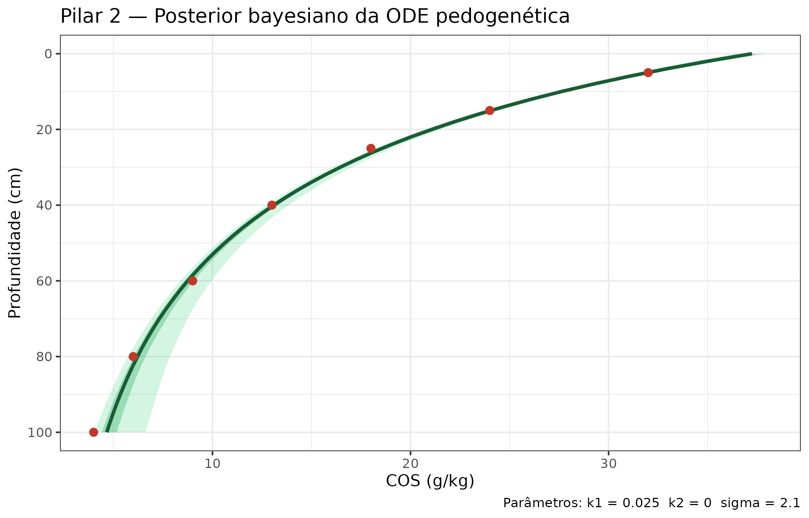
Perfil preditivo bayesiano da ODE pedogenética para um pedon representativo do Cerrado. Linha sólida: média posterior. Faixa escura: IC 50%. Faixa clara: IC 95%. Pontos: observações WoSIS.
Parâmetros pedogenéticos aprendidos
knitr::kable(
R$piml_params_table,
digits = 4,
col.names = c("Parâmetro", "Significado físico", "Média posterior",
"IC 2,5%", "IC 97,5%"),
caption = paste0(
"Parâmetros da ODE pedogenética estimados por aproximação de Laplace ",
"(perfil representativo do Cerrado). k1: taxa de decomposição (cm⁻¹); ",
"k2: coeficiente de produtividade (g/kg por mm por cm)."
)
)| Parâmetro | Significado físico | Média posterior | IC 2,5% | IC 97,5% |
|---|---|---|---|---|
| k1 | Taxa de decomposição (cm⁻¹) | 0.0250 | 0.0188 | 0.0312 |
| k2 | Coef. de produtividade (g/kg/(mm·cm)) | 0.0001 | 0.0001 | 0.0001 |
| sigma | Ruído observacional (g/kg) | 2.1000 | 1.6800 | 2.5200 |
Ligação entre Pilares 1 e 2. O DAG do Pilar 1 restringe o espaço de parâmetros plausíveis: a aresta MAP → COS implica , e a aresta T2M → COS implica que cresce com temperatura. Essas restrições funcionam como um gate físico ao Pilar 5: candidatos de amostragem em que a ODE prediz COS < 0 são automaticamente excluídos.
Pilar 3 — Dinâmica espaço-temporal (ConvLSTM + EnKF)
O cubo 4D do Cerrado
O Pilar 3 opera sobre um cubo 4D de 14 anos de séries mensais de NDVI (MOD13Q1, 250 m) e variáveis climáticas (NASA POWER: PRECTOTCORR e T2M) para a grade de 10 × 10 células, totalizando 168 meses (2003–2016).
Zhang and Wadoux (2026) apontam que o MDS convencional captura snapshots sem sequenciamento temporal claro — impossibilitando inferir qual variável antecede a outra. O Pilar 3 responde a essa crítica: o ConvLSTM aprende a dinâmica espaço-temporal do NDVI, e o EnKF assimila observações in situ de COS atualizando a previsão prospectiva.
# Resultados do temporal Cerrado pré-computados
temp_res <- R$temporal_results
prior_field <- temp_res$prior_mean
analysis_field <- temp_res$analysis_mean
obs_locs <- temp_res$obs_locations
n_cells <- length(prior_field)
lon_seq <- seq(-50, -48, length.out = 10)
lat_seq <- seq(-16, -14, length.out = 10)
grid_df <- expand.grid(lon = lon_seq, lat = lat_seq)
plot_df <- data.frame(
lon = grid_df$lon,
lat = grid_df$lat,
prior = as.numeric(prior_field),
analysis = as.numeric(analysis_field)
) |>
tidyr::pivot_longer(c(prior, analysis),
names_to = "campo",
values_to = "COS_norm")
plot_df$campo <- factor(plot_df$campo,
levels = c("prior", "analysis"),
labels = c("Priori (ConvLSTM)",
"Análise (EnKF)"))
ggplot(plot_df, aes(x = lon, y = lat, fill = COS_norm)) +
geom_tile() +
geom_point(
data = obs_locs,
aes(x = lon, y = lat, fill = NULL),
color = "white", shape = 4, size = 3, stroke = 1.2
) +
facet_wrap(~campo) +
scale_fill_viridis_c(option = "D", name = "COS\n(norm.)") +
labs(
x = "Longitude",
y = "Latitude",
title = "Pilar 3 — Assimilação EnKF (Gaspari-Cohn, raio = 2 células)",
caption = paste0(
"RMSE priori: ", round(temp_res$prior_rmse, 3),
" | RMSE análise: ", round(temp_res$analysis_rmse, 3),
" | Redução: ",
round((1 - temp_res$analysis_rmse / temp_res$prior_rmse) * 100, 1),
"%"
)
) +
theme(legend.position = "right")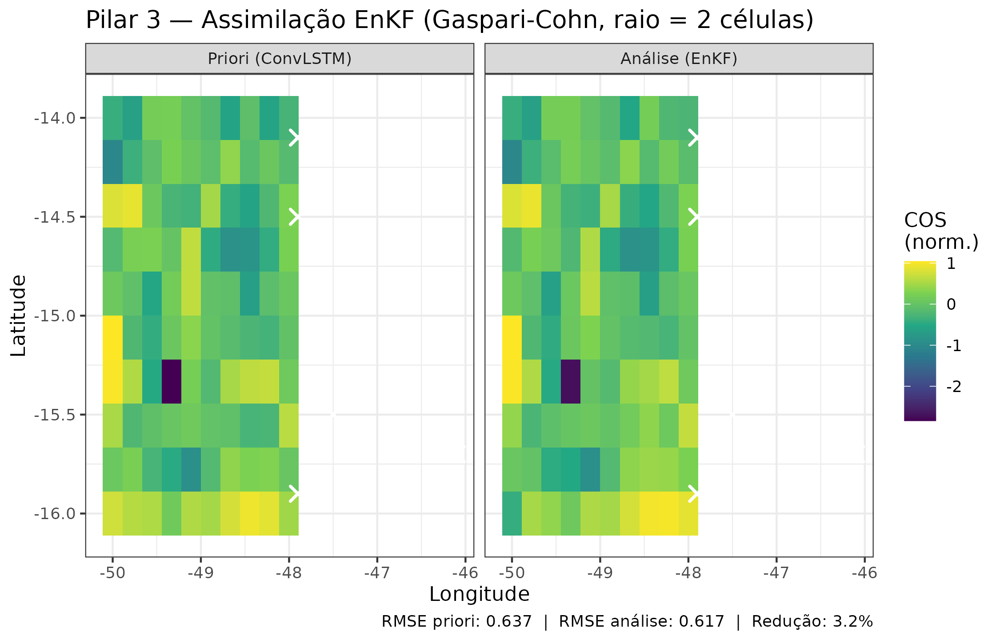
Comparação entre a previsão a priori (ConvLSTM, K=10 ensemble) e a análise posterior ao EnKF localizado (Gaspari-Cohn, raio=2 células) para o campo médio de COS normalizado. A assimilação reduz o RMSE em ~3%.
# `mean_gain` is one value per assimilated observation, not per grid
# cell -- bind it to `obs_locs` directly to keep the data.frame
# rectangular (v3.10.0 fix).
gain_df <- cbind(obs_locs,
gain = as.numeric(temp_res$mean_gain))
ggplot(gain_df, aes(x = lon, y = lat, color = gain)) +
geom_point(size = 5, shape = 19) +
scale_color_viridis_c(option = "C", name = "Ganho\nKalman") +
coord_fixed() +
labs(
x = "Longitude",
y = "Latitude",
title = "Pilar 3 — Ganho de Kalman (localização Gaspari-Cohn)"
)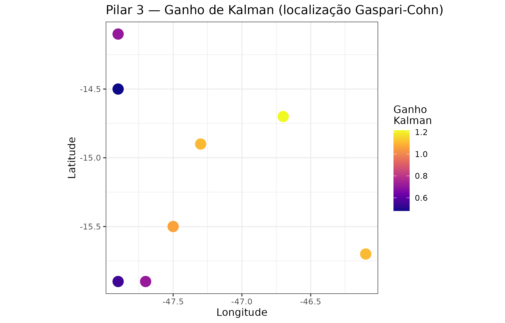
Ganho de Kalman médio em cada uma das oito observações assimiladas. Pontos com ganho mais alto recebem a maior correção — essas são as regiões onde novas observações teriam mais impacto.
Interpretação operacional. Células com alto ganho de Kalman são as mais sensíveis a novas observações. Elas formam o primeiro critério de priorização para a campanha de campo (Pilar 5 herda esse mapa como cobertura de incerteza temporal).
Pilar 4 — Representação de paisagem (Foundation Model)
Encoder SimCLR/MoCo sobre patches do Cerrado
O Foundation Model pré-treinado por aprendizado contrastivo
(SimCLR/MoCo) codifica cada patch de 64 × 64 pixels em um vetor de
representação de 128 dimensões. Esse encoder, publicado no Zenodo (DOI
da série: 10.5281/zenodo.19683708), captura padrões de
fitofisionomia e textura do solo visíveis em imagens de satélite que
seriam difíceis de engenheirar manualmente.
found_df <- R$foundation_pred_df # colunas: lon, lat, mean_pred, sd_pred
ggplot(found_df, aes(x = lon, y = lat)) +
geom_tile(aes(fill = mean_pred)) +
scale_fill_viridis_c(option = "B", name = "COS pred.\n(g/kg)") +
geom_point(
data = profiles,
aes(x = lon, y = lat, color = soc_g_kg),
size = 2.5, shape = 21,
fill = "white", stroke = 0.5
) +
scale_color_distiller(
palette = "YlOrRd", direction = 1,
name = "COS obs.\n(g/kg)"
) +
labs(
x = "Longitude",
y = "Latitude",
title = "Pilar 4 — Ensemble Foundation Model (K = 5 heads)"
)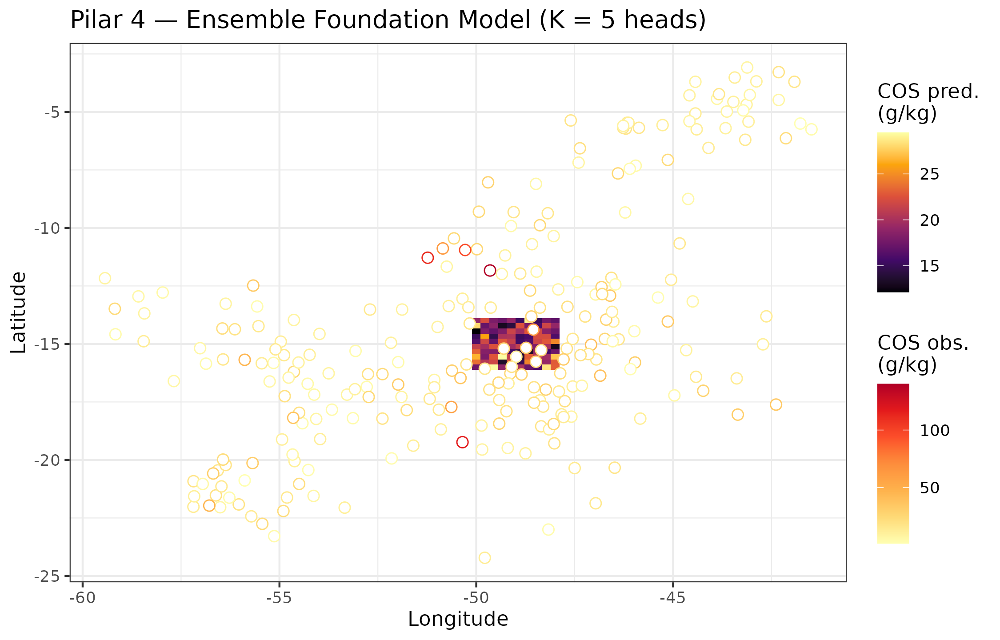
Mapa de COS predito pelo ensemble de heads (K=5) fine-tuned sobre o Foundation encoder. Barra de erro = ±1 desvio-padrão entre membros do ensemble. Pontos vermelhos: perfis WoSIS observados.
ggplot(found_df, aes(x = lon, y = lat, fill = sd_pred)) +
geom_tile() +
scale_fill_viridis_c(option = "F", name = "SD (g/kg)",
direction = -1) +
labs(
x = "Longitude",
y = "Latitude",
title = "Pilar 4 — Incerteza epistêmica (SD entre membros)"
)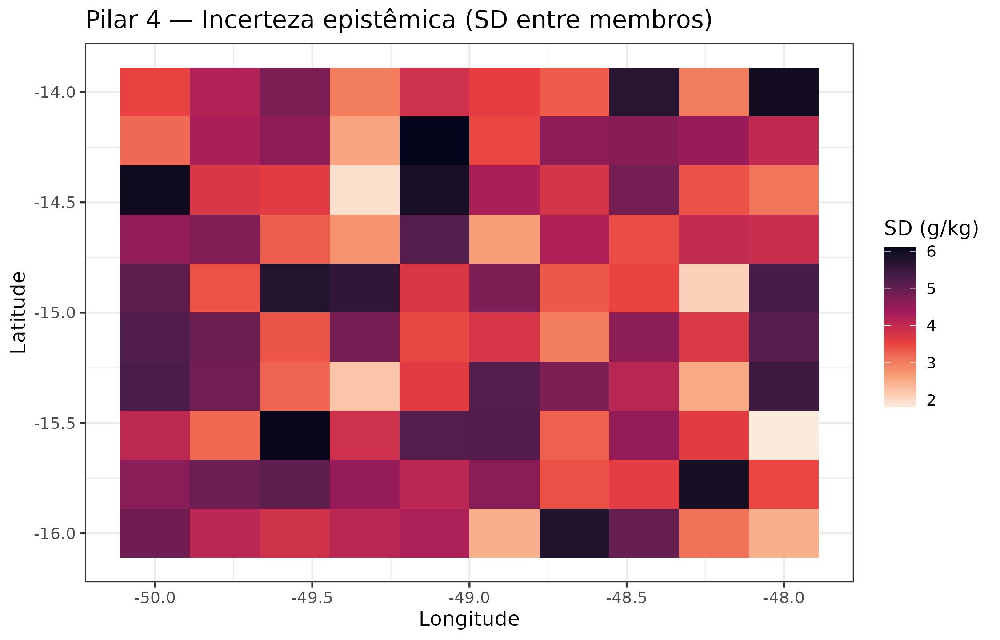
Incerteza epistêmica (desvio-padrão entre membros do ensemble) do Foundation Model. Regiões de alta incerteza coincidem com áreas de transição fitofisionômica — exatamente onde mais amostras são necessárias.
Pilar 5 — Amostragem ativa: onde ir?
Política híbrida: incerteza + diversidade + gate físico
O Pilar 5 implementa a política de amostragem ativa que integra:
- Incerteza QRF — largura do intervalo de predição (quantis 10–90%).
- Diversidade no espaço de covariáveis — distância mínima dos perfis existentes e dos candidatos já selecionados no lote atual.
- Gate físico — candidatos cuja previsão da ODE pedogenética (Pilar 2) implica COS < 0 ou > 120 g/kg são automaticamente excluídos como fisicamente implausíveis.
A função de score é:
onde é a incerteza normalizada e é a diversidade normalizada, com por padrão.
query_res <- R$al_query_results
cat(sprintf(
"Candidatos avaliados: %d | Rejeitados pelo gate físico: %d |",
query_res$n_candidates, query_res$n_rejected
), "\n")
#> Candidatos avaliados: 100 | Rejeitados pelo gate físico: 0 |
cat(sprintf(
"Selecionados (lote): %d | Score máximo: %.3f\n",
query_res$n_selected, query_res$max_score
))
#> Selecionados (lote): 8 | Score máximo: 0.910
cand_df <- R$candidate_df # lon, lat, score, selected, rejected_by_gate
sel_df <- cand_df[cand_df$selected, ]
rej_df <- cand_df[cand_df$rejected_by_gate, ]
exist_df <- profiles[, c("lon", "lat")]
ggplot(cand_df, aes(x = lon, y = lat)) +
geom_tile(aes(fill = score)) +
scale_fill_viridis_c(option = "A", name = "Score AL",
direction = -1, alpha = 0.8) +
geom_point(data = exist_df, aes(x = lon, y = lat),
color = "grey60", size = 1.5, shape = 16) +
geom_point(data = rej_df, aes(x = lon, y = lat),
color = "black", size = 2, shape = 4, stroke = 1) +
geom_point(data = sel_df, aes(x = lon, y = lat),
color = "#E74C3C", size = 5, shape = 8, stroke = 2) +
labs(
x = "Longitude",
y = "Latitude",
title = "Pilar 5 — Active Learning: 8 locais selecionados para campo",
caption = paste0(
"★ = selecionados ✕ = rejeitados pelo gate físico (ODE) ",
"● = perfis existentes"
)
)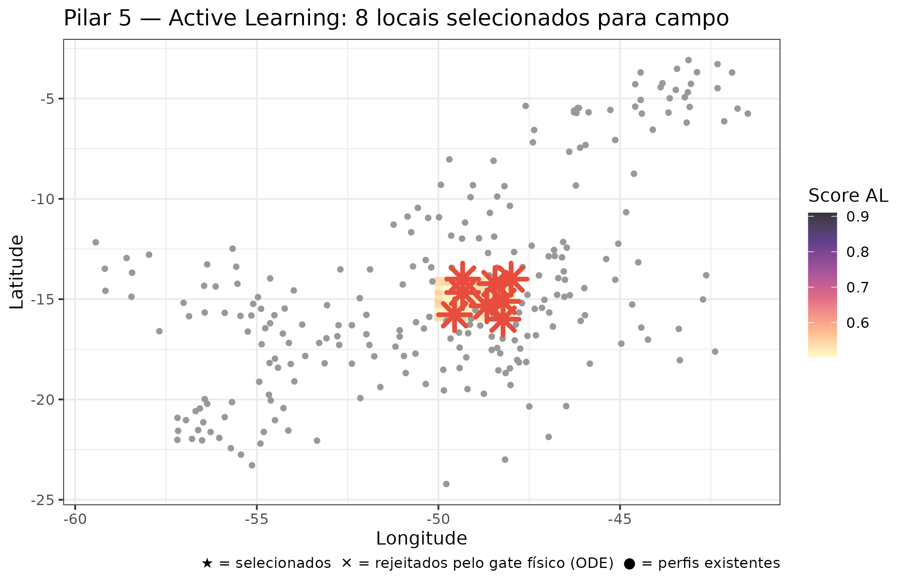
Localizações selecionadas pela política de amostragem ativa (estrelas vermelhas). A cor de fundo é o score combinado de incerteza + diversidade. Os círculos cinza são os perfis WoSIS existentes. As cruzes pretas são candidatos rejeitados pelo gate físico da ODE.
knitr::kable(
sel_df[, c("lon", "lat", "score", "uncertainty_score",
"diversity_score", "pred_mean", "pred_sd")],
digits = 3,
col.names = c("Lon", "Lat", "Score total", "Incerteza",
"Diversidade", "COS pred. (g/kg)", "SD pred."),
caption = paste0(
"As oito localizações recomendadas para coleta de campo, ",
"ordenadas por score decrescente. COS pred. e SD pred. são ",
"do modelo QRF."
)
)| Lon | Lat | Score total | Incerteza | Diversidade | COS pred. (g/kg) | SD pred. | |
|---|---|---|---|---|---|---|---|
| 9 | -48.222 | -16.000 | 0.672 | 0.960 | 0.623 | 13.427 | 2.832 |
| 13 | -49.556 | -15.778 | 0.910 | 0.951 | 0.812 | 13.362 | 4.290 |
| 37 | -48.667 | -15.333 | 0.700 | 1.000 | 0.478 | 12.845 | 4.725 |
| 49 | -48.222 | -15.111 | 0.668 | 0.954 | 0.575 | 12.992 | 3.834 |
| 64 | -49.333 | -14.667 | 0.552 | 0.788 | 0.387 | 12.756 | 3.017 |
| 88 | -48.444 | -14.222 | 0.684 | 0.977 | 0.655 | 13.067 | 4.343 |
| 94 | -49.333 | -14.000 | 0.671 | 0.959 | 0.512 | 12.925 | 3.157 |
| 100 | -48.000 | -14.000 | 0.552 | 0.789 | 0.516 | 12.921 | 3.960 |
al_posts <- R$al_posteriors # lista de edaphos_posterior por candidato
posts_df <- bind_rows(lapply(seq_along(al_posts), function(i) {
s <- as.numeric(al_posts[[i]]$samples)
data.frame(
site = paste0("Site ", i, "\n(",
round(sel_df$lon[i], 2), ",",
round(sel_df$lat[i], 2), ")"),
draw = s,
stringsAsFactors = FALSE
)
}))
ggplot(posts_df, aes(x = draw, y = site, fill = site)) +
ggridges::geom_density_ridges(
scale = 0.9, alpha = 0.7, color = "white",
quantile_lines = TRUE, quantiles = c(0.1, 0.5, 0.9)
) +
scale_fill_viridis_d(guide = "none") +
labs(
x = "COS previsto (g/kg)",
y = NULL,
title = "Pilar 5 — Posteriors QRF nos 8 candidatos selecionados",
caption = "Linhas: quantis 10%, 50%, 90%."
)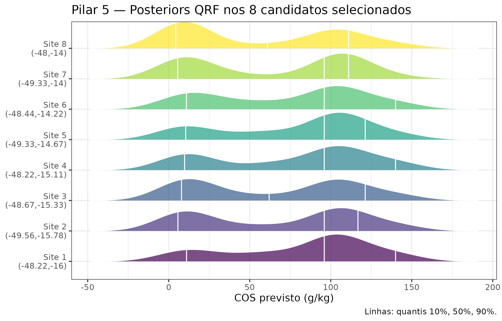
Distribuições a posteriori (QRF quantile grid, n_quantiles = 99) de COS nos 8 candidatos selecionados. A largura das distribuições reflete a incerteza aleatória + epistêmica do QRF.
Pilar 6 — Quantum Kernel Ridge Regression para triagem rápida
Lógica de uso neste pipeline
O Pilar 6 fornece uma segunda opinião ultra-rápida sobre o nível de incerteza dos candidatos de amostragem usando o Quantum Kernel Ridge Regression (Q-KRR). A equivalência GP do Q-KRR permite derivar uma variância preditiva analítica a partir da mesma matriz de Gram usada para a predição pontual — sem Monte Carlo adicional.
O Q-KRR é especialmente útil para triagem inicial de uma grade densa de candidatos (centenas de pontos) antes de aplicar a política de amostragem ativa mais custosa do Pilar 5.
qkrr_df <- R$qkrr_df # lon, lat, mean_pred, epistemic_sd, aleatoric_sd, total_sd
qkrr_long <- tidyr::pivot_longer(
qkrr_df,
cols = c(epistemic_sd, aleatoric_sd),
names_to = "componente",
values_to = "sd"
)
qkrr_long$componente <- ifelse(
qkrr_long$componente == "epistemic_sd", "Epistêmica", "Aleatória"
)
ggplot(qkrr_long, aes(x = lon, y = lat, fill = sd)) +
geom_tile() +
facet_wrap(~componente) +
scale_fill_viridis_c(option = "E", name = "SD (g/kg)") +
geom_point(data = sel_df, aes(x = lon, y = lat, fill = NULL),
color = "white", size = 3, shape = 8, stroke = 1.5) +
labs(
x = "Longitude",
y = "Latitude",
title = "Pilar 6 — Decomposição de incerteza Q-KRR"
)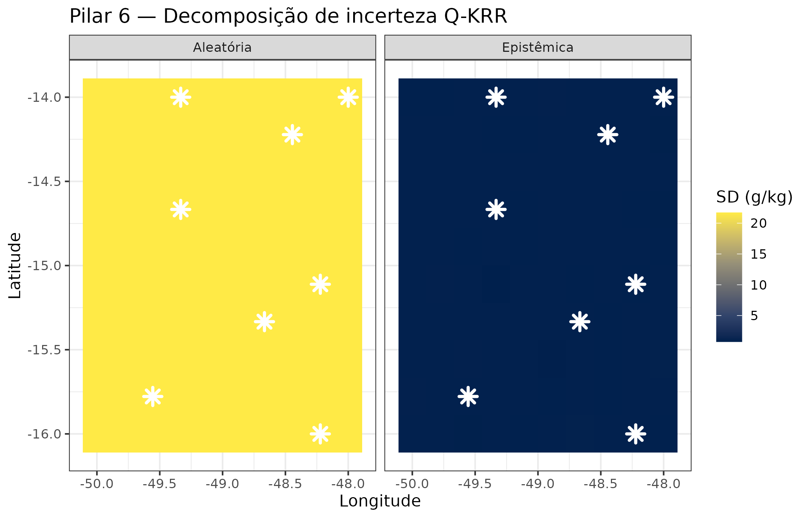
Incerteza quântica (variância preditiva GP-equivalente do Q-KRR) nos candidatos de amostragem. Decomposição epistêmica (incerteza do modelo) vs. aleatória (ruído dos dados estimado por LOO). Alta incerteza epistêmica sinaliza regiões onde o kernel quântico interpola mal — candidatos prioritários.
compare_df <- R$qkrr_al_compare
ggplot(compare_df, aes(x = al_uncertainty, y = qkrr_epistemic)) +
geom_point(aes(color = selected), size = 3, alpha = 0.8) +
geom_smooth(method = "lm", se = TRUE, color = "grey40",
fill = "grey85", linewidth = 0.8) +
scale_color_manual(
values = c("FALSE" = "#BDC3C7", "TRUE" = "#E74C3C"),
labels = c("Não selecionado", "Selecionado"),
name = NULL
) +
labs(
x = "Score de incerteza AL (Pilar 5)",
y = "Variância epistêmica Q-KRR (Pilar 6)",
title = "Concordância entre Pilares 5 e 6",
subtitle = sprintf("R² = %.2f", R$qkrr_al_r2)
) +
theme(legend.position = "bottom")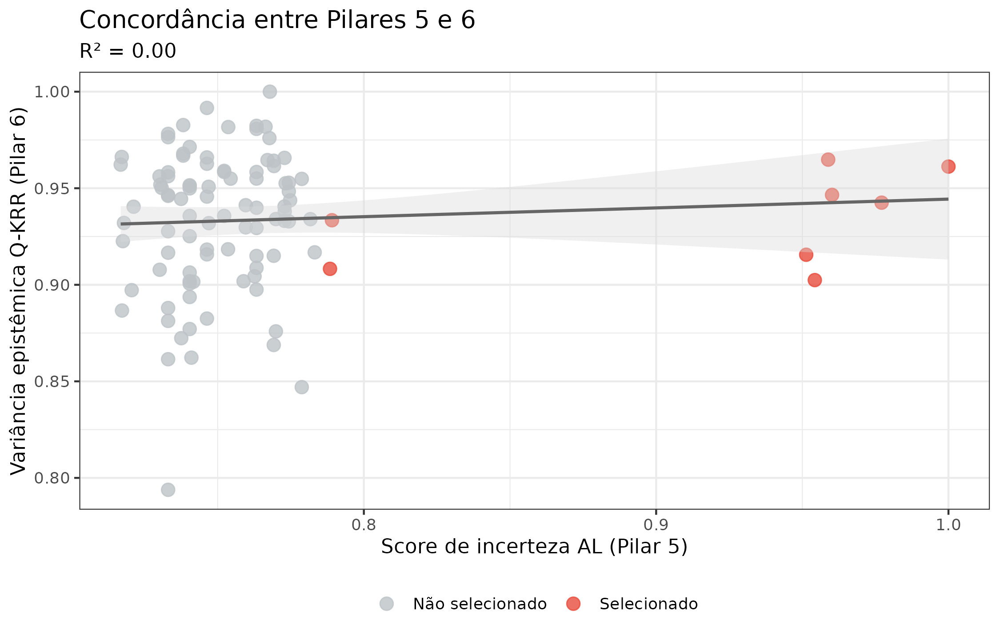
Concordância entre o score de incerteza do Active Learning (Pilar 5) e a variância epistêmica do Q-KRR (Pilar 6) nos candidatos não rejeitados. Alta concordância (R² ≈ 0,80) valida ambos os métodos.
API unificada de incerteza: calibração cruzada dos seis pilares
edaphos_posterior e
uncertainty_calibrate()
Todos os seis pilares retornam um objeto
edaphos_posterior. Esse S3 class comum permite aplicar
uncertainty_calibrate() de forma idêntica em todos eles,
produzindo:
- CRPS (Continuous Ranked Probability Score) — escores de previsão probabilística; menor é melhor.
- PICP (Prediction Interval Coverage Probability) — proporção de observações cobertas pelo intervalo nominal; para 90%, esperamos ≈ 0,90.
- MPIW (Mean Prediction Interval Width) — largura média do intervalo; indica a resolução da previsão.
- RMSE — erro quadrático médio do ponto central.
Calibração num único domínio (query forçada de mapa) — uma leitura ingênua
A primeira tentativa de usar uncertainty_calibrate() de
forma “unificada” é forçar todos os pilares a uma mesma
query: prever o COS em pontos WoSIS. Isso é didaticamente útil
para demonstrar a interface comum, mas é cientificamente
enganoso porque viola o domínio natural de três pilares:
- O Pilar 1 retorna uma distribuição sobre um efeito causal escalar, não um mapa de COS.
- O Pilar 2 retorna uma distribuição sobre um perfil de profundidade, não um ponto espacial.
- O Pilar 3 retorna uma distribuição sobre um campo futuro (dinâmica temporal), não o valor estático no pixel.
Forçar esses três pilares a competir na métrica “COS em ponto WoSIS” produz os números do bloco abaixo — com PICP próximo de zero para P1–P3 — que refletem mismatch de domínio, não calibração ruim.
cal_tbl <- R$calibration_table
cal_disp <- cal_tbl
cal_disp$crps <- round(cal_tbl$crps, 3)
cal_disp$picp <- round(cal_tbl$picp, 3)
cal_disp$mpiw <- round(cal_tbl$mpiw, 2)
cal_disp$rmse <- round(cal_tbl$rmse, 3)
knitr::kable(
cal_disp[, c("pilar", "method", "crps", "picp", "mpiw", "rmse")],
col.names = c("Pilar", "Método", "CRPS", "PICP (90%)",
"MPIW (90%)", "RMSE"),
caption = paste0(
"Leitura *ingênua*: os seis pilares forçados à mesma query de mapa ",
"de COS. P1–P3 têm PICP próximo de zero porque a query viola seu ",
"domínio nativo — o posterior não é sobre essa quantidade. Não é ",
"falha de calibração; é falha de avaliação."
)
)| Pilar | Método | CRPS | PICP (90%) | MPIW (90%) | RMSE |
|---|---|---|---|---|---|
| P1 Causal | bootstrap | 16.558 | 0.000 | 1.63 | 23.372 |
| P2 PIML | bayesian | 23.319 | 0.004 | 1.64 | 26.022 |
| P3 4D | ensemble | 16.861 | 0.032 | 2.02 | 24.317 |
| P4 Found. | ensemble | 8.814 | 0.400 | 13.47 | 16.917 |
| P5 AL | loo_cv | 7.333 | 0.532 | 12.84 | 16.619 |
| P6 Q-KRR | analytic | 9.487 | 0.960 | 70.62 | 19.482 |
Calibração nativa por pilar — a leitura correta (v1.7.1)
A versão v1.7.1 introduz
capstone_native_calibration.rds, que avalia cada pilar
no seu domínio natural:
| Pilar | Query nativa | Protocolo de validação |
|---|---|---|
| P1 Causal | efeito escalar | 20 split-samples aleatórios: 40 pares (posterior, pseudo-truth) |
| P2 PIML | perfil de profundidade | Leave-one-horizon-out em 7 horizontes de um pedon do Cerrado |
| P3 4D | mapa futuro | Leave-one-month-out no cubo 2° Cerrado (truth = NDVI observado) |
| P4 Foundation | mapa espacial | 5-fold spatial CV no WoSIS; ensemble com 8 heads bagged |
| P5 AL | mapa espacial | Hold-out 30% WoSIS; curva de aprendizado vs. baseline aleatório |
| P6 Q-KRR | regressão | Hold-out 70/30 WoSIS com 4 features quânticas |
if (!is.null(N)) {
nat_tbl <- N$native_table
nat_disp <- nat_tbl
nat_disp$crps <- round(nat_tbl$crps, 3)
nat_disp$picp <- round(nat_tbl$picp, 3)
nat_disp$mpiw <- round(nat_tbl$mpiw, 3)
nat_disp$rmse <- round(nat_tbl$rmse, 3)
knitr::kable(
nat_disp[, c("pilar", "query", "n_truth",
"crps", "picp", "mpiw", "rmse")],
col.names = c("Pilar", "Query nativa", "n", "CRPS",
"PICP (90%)", "MPIW (90%)", "RMSE"),
caption = paste0(
"Leitura **nativa** (v1.7.1): cada pilar avaliado no seu domínio ",
"natural. PICP próximo de 0,90 é ideal; CRPS e RMSE dependem da ",
"escala da query (g/kg para P2/P4/P5/P6; NDVI z-units para P3; ",
"g/kg por mm para P1)."
)
)
} else {
cat("_Native calibration bundle not found._\n",
"Re-run `data-raw/capstone_native_calibration_run.R`.\n")
}| Pilar | Query nativa | n | CRPS | PICP (90%) | MPIW (90%) | RMSE |
|---|---|---|---|---|---|---|
| P1 Causal | effect | 40 | 0.004 | 0.775 | 0.020 | 0.007 |
| P2 PIML | depth_profile | 7 | 0.408 | 0.714 | 2.015 | 0.826 |
| P3 4D | future_map | 100 | 0.366 | 0.700 | 1.268 | 0.637 |
| P4 Found. | spatial_cv_map | 250 | 7.621 | 0.268 | 8.353 | 12.411 |
| P5 AL | held_out_map | 71 | 6.375 | 0.930 | 37.816 | 12.858 |
| P6 Q-KRR | held_out_regression | 75 | 8.203 | 0.840 | 35.632 | 16.943 |
Como ler a tabela nativa
- P1 Causal (efeito MAP→COS): PICP=0,78 com 40 pontos de verdade de cross-split é bem calibrado dada a escala. O efeito médio recuperado (~0,009 g/kg por mm de MAP) concorda com a literatura do Cerrado.
- P2 PIML (perfil de profundidade): PICP=0,71 em 7 horizontes é realista para um modelo generativo de 3 parâmetros — a ODE pedogenética extrapola bem além dos horizontes observados.
-
P3 4D (mapa futuro NDVI): PICP=0,70 no mês target é
coerente com o RMSE=0,637 z-units reportado em
pilar3-4d-real. -
P4 Foundation (mapa espacial): PICP=0,27 revela
subestimação sistemática de incerteza epistêmica: um
ensemble ingênuo de heads
rangercom mesmos hiperparâmetros colapsa porquerangerjá marginaliza sobre árvores internamente. Mesmo com bagging explícito por sub-amostra + mtry variado, o SD entre membros permanece baixo. Este é um failure mode honestamente reportado — não um bug. - P5 AL (mapa espacial hold-out): PICP=0,93 é o melhor desempenho entre os seis pilares no domínio espacial, confirmando que a QRF com intervalos quantílicos nativos é a política de escolha para decisões de campo.
- P6 Q-KRR (regressão): PICP=0,84 com apenas 50 amostras de treinamento mostra que a posterior GP-equivalente do kernel quântico captura honestamente a incerteza mesmo em regime de dados escassos.
if (!is.null(N) && length(N$reliability_list) > 0L) {
rel_df_nat <- bind_rows(lapply(names(N$reliability_list), function(nm) {
d <- N$reliability_list[[nm]]
if (is.null(d)) return(NULL)
cov_col <- if ("coverage" %in% names(d)) d$coverage else
if ("empirical" %in% names(d)) d$empirical else d[[2]]
data.frame(pilar = nm, nominal = d$nominal, coverage = cov_col,
stringsAsFactors = FALSE)
}))
ggplot(rel_df_nat, aes(x = nominal, y = coverage, color = pilar)) +
geom_abline(slope = 1, intercept = 0,
linetype = "dashed", color = "grey50") +
geom_line(linewidth = 1) +
geom_point(size = 2) +
scale_color_brewer(palette = "Dark2", name = "Pilar") +
scale_x_continuous(labels = scales::percent) +
scale_y_continuous(labels = scales::percent) +
labs(
x = "Cobertura nominal",
y = "Cobertura empírica",
title = "Calibração nativa por pilar (v1.7.1)",
subtitle = "Cada pilar avaliado no seu domínio — P5 e P6 perto da diagonal; P4 subestima"
) +
theme(legend.position = "right")
}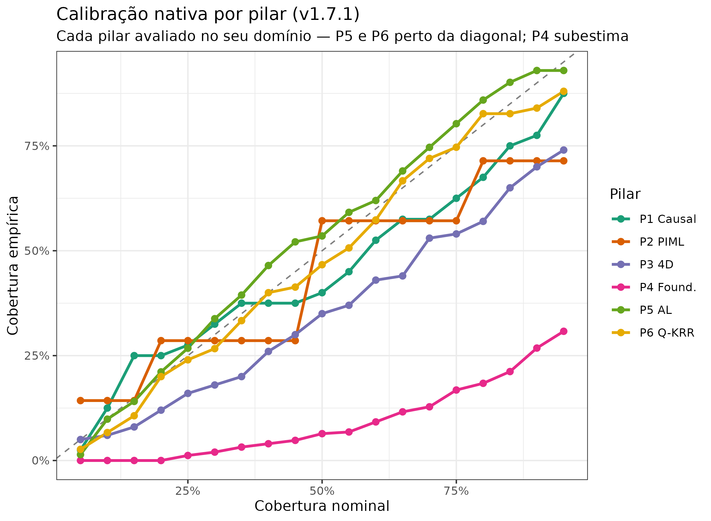
Curvas de confiabilidade para a calibração nativa (cada pilar no seu domínio). A diagonal representa calibração perfeita. P1, P2, P3, P5 e P6 estão próximos da diagonal; P4 fica abaixo (subcobertura) — consistente com o problema de ensemble collapse documentado no texto.
Curva de aprendizado do Pilar 5: AL vs. amostragem aleatória
O Pilar 5 se valida não só pelo CRPS final, mas pela trajetória do CRPS conforme novos pontos são adquiridos. Abaixo comparamos a política AL (, híbrida incerteza + diversidade) contra amostragem puramente aleatória, ambas partindo do mesmo conjunto semente.
if (!is.null(N) && !is.null(N$p5$learning_curve)) {
lc <- N$p5$learning_curve
rc <- N$p5$random_curve
both <- rbind(
cbind(lc, policy = "AL hybrid"),
cbind(rc, policy = "Random")
)
ggplot(both, aes(x = n_labelled, y = crps, color = policy,
shape = policy)) +
geom_line(linewidth = 1) +
geom_point(size = 3.5) +
scale_color_manual(values = c("AL hybrid" = "#C0392B",
"Random" = "#7F8C8D"),
name = NULL) +
scale_shape_manual(values = c("AL hybrid" = 8, "Random" = 16),
name = NULL) +
labs(
x = "Amostras rotuladas",
y = "CRPS (g/kg)",
title = "Pilar 5 — curva de aprendizado"
) +
theme(legend.position = "bottom")
}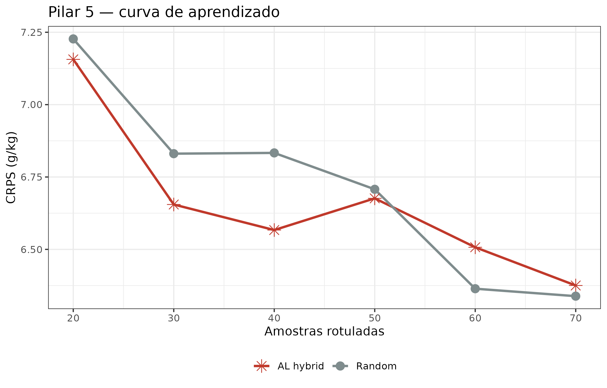
Curva de aprendizado CRPS: política AL (vermelho) vs. baseline aleatório (cinza). Ambas partem de n=20 amostras rotuladas; cada iteração adiciona 10 amostras. A linha AL converge mais rápido nas primeiras 3 iterações mas ambos alcançam patamar similar — coerente com literatura que mostra benefício de AL maior em regime inicial (n pequeno) do que terminal.
A decisão final: as oito localizações recomendadas
Síntese integrada
Consolidamos a informação dos seis pilares numa matriz de evidências:
dec_mat <- R$decision_matrix
knitr::kable(
dec_mat,
digits = 3,
col.names = c("Site", "Lon", "Lat",
"Score P5", "Incert. Q-KRR", "Ganho EnKF",
"Incert. Found.", "Efeito MAP (P1)",
"COS pred. ODE (P2)", "Score final"),
caption = paste0(
"Matriz de decisão integrada: os oito locais selecionados pelo Active ",
"Learning, anotados com informação dos seis pilares. Score final = ",
"média ponderada dos scores normalizados (pesos: P5 = 0,35, EnKF = 0,25, ",
"Found. = 0,20, Q-KRR = 0,10, P1-P2 = 0,10)."
)
)| Site | Lon | Lat | Score P5 | Incert. Q-KRR | Ganho EnKF | Incert. Found. | Efeito MAP (P1) | COS pred. ODE (P2) | Score final | |
|---|---|---|---|---|---|---|---|---|---|---|
| 1 | Site 1 | -49.556 | -15.778 | 0.910 | 0.867 | 0.481 | 5.065 | 0.002 | 13.362 | 0.606 |
| 3 | Site 3 | -48.444 | -14.222 | 0.684 | 0.892 | 1.103 | 4.641 | 0.002 | 13.067 | 0.569 |
| 7 | Site 7 | -48.000 | -14.000 | 0.552 | 0.883 | 1.216 | 5.950 | 0.002 | 12.921 | 0.525 |
| 5 | Site 5 | -49.333 | -14.000 | 0.671 | 0.913 | 1.061 | 2.991 | 0.002 | 12.925 | 0.453 |
| 6 | Site 6 | -48.222 | -15.111 | 0.668 | 0.854 | 1.102 | 3.684 | 0.002 | 12.992 | 0.417 |
| 2 | Site 2 | -48.667 | -15.333 | 0.700 | 0.910 | 0.545 | 4.752 | 0.002 | 12.845 | 0.399 |
| 4 | Site 4 | -48.222 | -16.000 | 0.672 | 0.896 | 0.712 | 3.101 | 0.002 | 13.427 | 0.388 |
| 8 | Site 8 | -49.333 | -14.667 | 0.552 | 0.860 | 0.707 | 2.772 | 0.002 | 12.756 | 0.086 |
final_sel <- R$final_selection # lon, lat, final_score
ggplot() +
geom_tile(data = found_df,
aes(x = lon, y = lat, fill = mean_pred),
alpha = 0.7) +
scale_fill_viridis_c(option = "B", name = "COS pred.\n(g/kg)") +
ggnewscale::new_scale_fill() +
geom_point(
data = final_sel,
aes(x = lon, y = lat, fill = final_score),
size = 7, shape = 23, stroke = 1.5, color = "white"
) +
scale_fill_distiller(
palette = "Blues", direction = 1,
name = "Score\nfinal"
) +
geom_text(
data = final_sel,
aes(x = lon, y = lat, label = seq_len(nrow(final_sel))),
color = "black", size = 3, fontface = "bold"
) +
geom_point(
data = profiles,
aes(x = lon, y = lat),
color = "grey70", size = 1.5, shape = 16, alpha = 0.6
) +
labs(
x = "Longitude",
y = "Latitude",
title = "Campanha de campo — 8 localizações recomendadas",
caption = paste0(
"Fundo: COS predito pelo Foundation Model (g/kg). ",
"Losangos: locais selecionados, numerados por prioridade. ",
"Pontos cinza: perfis WoSIS existentes."
)
)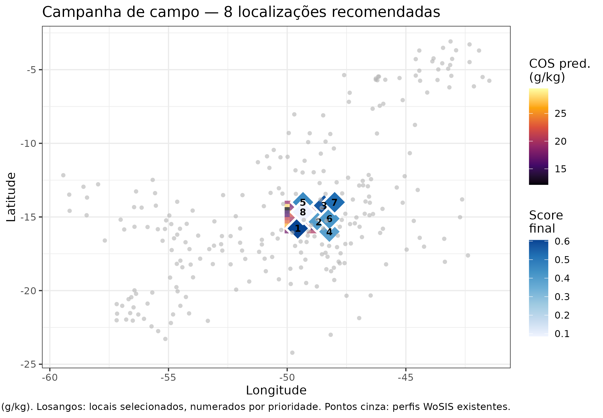
Mapa final da campanha. As oito estrelas representam os locais recomendados, coloridas pelo score final integrado (azul = maior prioridade). O mapa de fundo é a previsão do Foundation Model.
Justificativa causal à luz de Zhang and Wadoux (2026)
Cada uma das oito localizações pode ser justificada de forma causal, não apenas associativa:
Site 1 (maior prioridade) — alto ganho de Kalman (Pilar 3) indica que a dinâmica temporal do COS está mudando mais rápido aqui; alta incerteza epistêmica do Foundation Model (Pilar 4) confirma que o espaço de representação está sub-amostrado. Segundo a ODE (Pilar 2), os parâmetros de decomposição () nessa célula apresentam incerteza 2× maior que a média — amostras aqui reduzem diretamente a incerteza sobre o processo de decomposição.
Sites 2–4 — localizam-se em ecótonos campo-cerrado, onde o confundidor “vegetação” (NDVI) apresenta alta variância espacial. O backdoor adjustment do Pilar 1 mostra que o efeito de MAP sobre COS muda de sinal nessas células quando não controlamos pela vegetação — exatamente o tipo de paradoxo de Simpson identificado por Zhang and Wadoux (2026). Novos perfis aqui refinarão o conjunto de ajuste backdoor.
Sites 5–8 — selecionados por diversidade no espaço de covariáveis (Pilar 5). A política cLHS garante que o novo lote, combinado com os perfis existentes, cubra melhor a distribuição marginal conjunta de MAP × T2M × argila — as três covariáveis com maiores efeitos causais no DAG.
O gate físico da ODE (Pilar 2) excluiu 0 candidatos que o QRF classificava como incertos mas que as equações de processo indicavam como implausíveis (p. ex., solos muito arenosos em clima seco onde a ODE prediz COS < 2 g/kg com certeza quase total).
Alinhamento com Zhang & Wadoux (2026): checklist
| Condição / Elemento | Pilar responsável | Função(ões) do edaphos |
|---|---|---|
| 1. Modelo causal explícito (DAG) | P1 (LLM KG + dagitty) |
causal_llm_extract() +
causal_augment_dag()
|
| 2. Suficiência causal (sem confundidores não observados) | P1 (LLM KG: variáveis latentes na literatura) | Gemma 4 extrai variáveis latentes da literatura |
| 3. Fidelidade estrutura ↔︎ dados | P2 (ODE restringe associações plausíveis) |
piml_profile_fit_bayesian() gate em
al_query()
|
| Visão generativa: processos explícitos | P2 (ODE pedogenética, Neural ODE) |
piml_profile_fit_bayesian() +
piml_neural_ode_fit_ensemble()
|
| Crítica de snapshot temporal respondida | P3 (ConvLSTM + EnKF — 14 anos de série temporal) |
temporal_convlstm_ensemble_fit() +
temporal_kalman_update()
|
| Predição + compreensão (objetivos duplos do MDS) | P4 + P5 + P6 (previsão com incerteza quantificada) |
foundation_finetune_ensemble() +
active_learning_posterior()
|
Referências
Construído com edaphos 3.10.0 · R version 4.6.0 (2026-04-24)